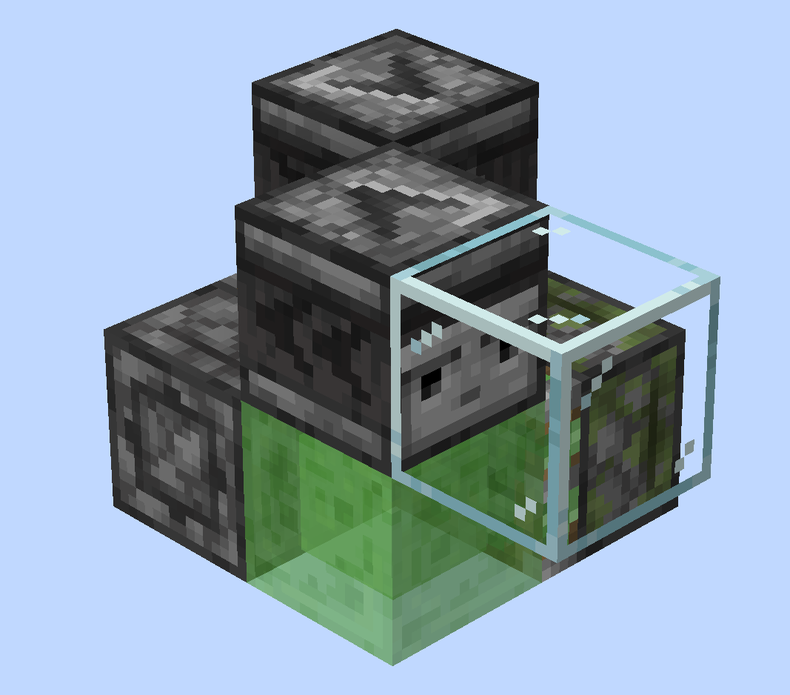

你好！欢迎回到《从0开始的 JE 航械入门》，我是 xxx。
本期视频，我们将会带你制作你的第一台绿萌飞行器，并且带你走一遍最基础的飞行器时序、了解所使用原件的特性。所以哪怕在此之前你没有过任何红石基础也没关系；当然，如果你对自己的红石基础能力有信心，可以直接跳过这一期。
在观看本期视频的同时，最好也打开游戏、上手试一试，相信你会有所收获的。那我们开始吧。
前期准备
在开始正式的机器搭建之前，我们需要做一些准备，比如：安装正确的游戏客户端、给游戏安装一些很实用的模组等等。
首先，请确认：你的客户端安装了 Fabric 模组加载器——也就是常说的 Fabric 端。为什么不能用其他的例如 Forge 和 NeoForge 这些呢？因为其他的模组加载器对游戏的修改比较大，可能存在和原版不同的特性，所以我们不能保证所有机器设计都能完美运行。
除此之外，本系列教程所使用的游戏版本为 1.21.10，如果可以的话，最好和我们保持同一版本。
推荐模组
这里也向你推荐一些能让你搓机体验大幅提升的模组：
- Carpet 地毯模组——提供了很多调试命令，比如创造模式穿墙等。常用的一些我们会在视频中介绍。在这里也推荐一下 Carpet GUI，它为 Carpet 提供了 GUI 界面，提供了搜索命令、收藏命令等实用功能，安装之后就不用在聊天栏花半天时间找想要的命令了。
- World Edit 创世神模组——虽然是老牌建筑模组，但是也对搓机器有帮助。
- Axiom 公理模组——创世神模组的上位替代，提供了超多实用功能，推荐同时安装这两个模组。
- 投影模组——用来保存、分享机器的模组，本系列教程所涉及的机器也都将以投影形式分享。
- Pistonder 活塞推出顺序显示——显示活塞推、拉时，移动的活塞（b36）方块到位顺序。用到的时候你就知道多好用了。
因为做航械的时候会经常需要使用一些指令，因此最好再安装一款按键宏模组，例如 Command keys 或 Command Macros。
最后，推荐你下载一款「红石显示」材质包，以便更加轻易地判断出活塞的种类、侦测器的朝向等问题。如果你不知道该用哪款材质，我们推荐使用 XeKr 老师的红显材质，你可以在简介找到下载链接。安装、配置完这些之后，我们就可以开始游戏了。
虚空环境
因为绿萌中的机器一般都运行在天上，所以我们可以选择直接在虚空环境中开始设计：
- 进入游戏后，点击单人游戏 > 创建新的世界，将游戏模式调为创造模式。
- 进入「世界」选项卡，世界类型调为「超平坦」。
- 进入自定义 > 预设，选择最下方的「虚空」选项。
- 点击「使用预设」「完成」并「创建新的世界」。
等待世界加载完，你就进入了一个几乎全是虚空的存档了。
年轻人的第一只活塞虫
进入游戏后，飞到空中，在聊天栏输入 /up 1（安装了创世神的情况下），你的脚下就会出现一个玻璃方块。接下来，我们就可以通过这个玻璃方块作为起点开始建造了。
从背包中取出粘液块、普通活塞、粘性活塞和侦测器，并摆出这个造型。

接下来，打掉玻璃！这只活塞虫就开始移动了。
恭喜你！完成了第一台飞行器的制作！你已经正式成为一名绿萌玩家啦 😀
时序分析
接下来，让我们仔细观察一下这台活塞虫：这是一台以 10gt 为运行周期的活塞虫，这意味着它每 10gt——也就是正常情况下、现实中的 0.5 秒——走一个方块的距离。
再观察它每次移动时的动作：侦测器 1 先亮起，普通活塞推出；到位之后侦测器 2 亮起，粘性活塞伸出；然后侦测器 2 熄灭，粘性活塞拉回另外半边，以此循环……
这个时候就有聪明的观众要问了：这个侦测器对着空气是怎么激活活塞的？还有为什么这个机器是 10gt 循环，不应该是 2+3+2+2+3=12gt 吗？
侦测器激活活塞，是利用了 Java 版中活塞的半连接性，即常说的 QC。简单来说就是：为活塞上方方块的位置供能，等同于对活塞供能。这里侦测器对着活塞上面发出信号，就 QC 激活了活塞。关于半连接性以及活塞的一些其他特性，你可以观看《从活塞到游戏机制》系列视频，或者查阅 GTMC 的这篇文章。
至于为什么是 10gt 为周期——我们先来认识一下 gt 的概念：gt，全称 Game Tick，也就是游戏刻，是游戏中最小的完整时间单位。正常情况下，每秒会经过 20 个 gt。如果你还不知道这个的话，最好先去阅读一下这篇文章，我们在这里就不过多展开了。
让我们回到这个活塞虫，拆解它一个周期内的动作：
右半部分到位，侦测器 1 添加 2gt「延迟」。
侦测器 1 亮起，激活活塞，活塞开始伸出。
左半边被到位，侦测器 2 添加 2gt「延迟」。
侦测器 2 亮起，激活粘性活塞。
侦测器 2 熄灭，粘性活塞开始收回。
右半部分到位，侦测器 1 添加 2gt「延迟」（回到第 0gt）。
对的对的。但是如果你之前接触过红石，可能听说过「活塞有 3gt 延迟」的说法，这里为什么都是 2gt 活塞运动？呃……对吗？这里就要介绍活塞的另一个特性了。
（小字：初识）微时序
眼尖的观众可能已经发现，我前面介绍「游戏刻」时曾说过：gt 是「游戏中最小的『完整』时间单位」，而微时序，就是小于游戏刻——或者说，在每个游戏刻中发生的——事件的顺序。
在 1.19.3 及以后的游戏版本中，游戏会在每个游戏刻处理这些事件。哎哎！先别急着退出视频，我们这期涉及到的微时序阶段没那么多，其实你只需要注意这些就行了：
三个关键阶段
计划刻阶段——侦测器、中继器等原件运行的阶段，所以这些原件也被称为「计划刻原件」。拿侦测器举例，每当侦测器侦测到面前发生变化，就会添加一个两 gt 后（当前 gt 数 +2）的「计划」。等到了执行「计划」的游戏刻，它就会在这个阶段检查自己的状态：已经亮起的话就熄灭、处于熄灭状态则亮起。
方块事件阶段——活塞运行的阶段。需要注意的是：如果活塞接收到的信号是在某 gt 的方块事件阶段当中、之前发生的，就会放在这个阶段处理；而这个阶段之后对活塞发出的信号则会放到下个 gt 处理。
方块实体阶段——关于这个阶段，你只需要知道：活塞推方块是有进度的，而且活塞会在开始推出 / 收回后的第三个方块实体阶段到位方块。
接着我们带着这些新知识再看回分析：
方块实体阶段：右半部分到位，侦测器 1 添加 2gt 后的「计划」。
计划刻阶段（TT）：侦测器 1 执行「计划」，亮起并为活塞供能，接着添加 2gt 后的「计划」（这是为了熄灭自己）。
方块事件阶段（BE）：普通活塞开始推出。
经过第一个方块实体阶段（TE）。
经过第二个方块实体阶段（TE）。
计划刻阶段（TT）：侦测器 1 执行再次「计划」，熄灭自己（然而并没有什么影响）。
方块实体阶段（TE）：这是第三个，于是到位左半边、侦测器 2 添加「计划」。
计划刻阶段（TT）：侦测器 2 执行「计划」，亮起并为粘性活塞供能，接着添加 2gt 后的「计划」。
方块事件阶段（BE）：粘性活塞开始伸出。
经过第一个方块实体阶段（TE）。
计划刻阶段（TT）：侦测器 2 执行「计划」，熄灭并停止供能。
方块事件阶段（BE）：粘性活塞失去供能，于是转而开始收回。
经过第一个方块实体阶段（TE）（收回事件）。
方块实体阶段：右半部分到位，侦测器 1 添加 2gt 后的「计划」。
以此循环……
这就是飞行器移动周期内发生的事情。可是……分析这一切，有什么意义呢？
我不到啊——我知道的是：不了解怎么分析的话，做机器容易遇到「神秘问题」。而且其实你并不需要人力做分析，可以使用 Carpet TIS 扩展模组来记录发生的事件；不过微时序的学习也是很必要的，不然连模组的输出都会看不明白。
那么，本期视频的内容到这里也差不多要结束了，感谢各位的观看！我们，下期再见！